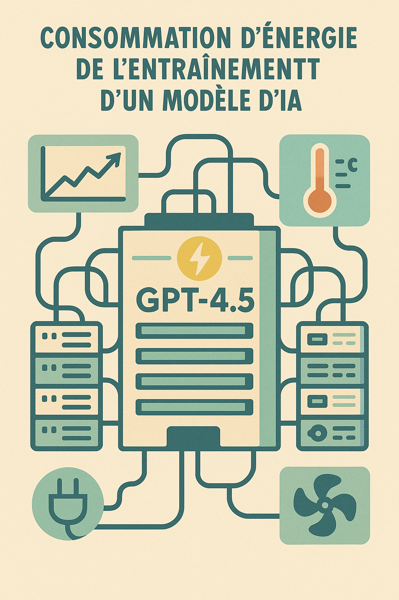
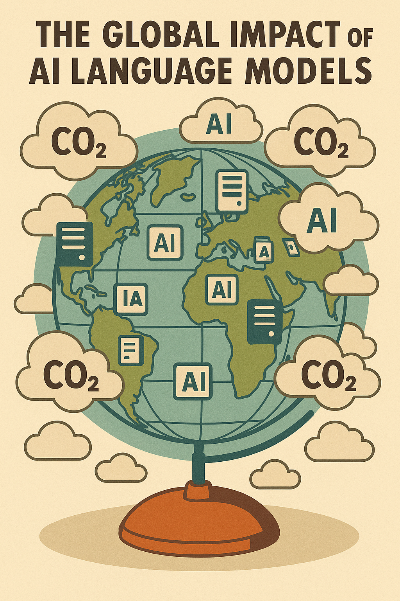
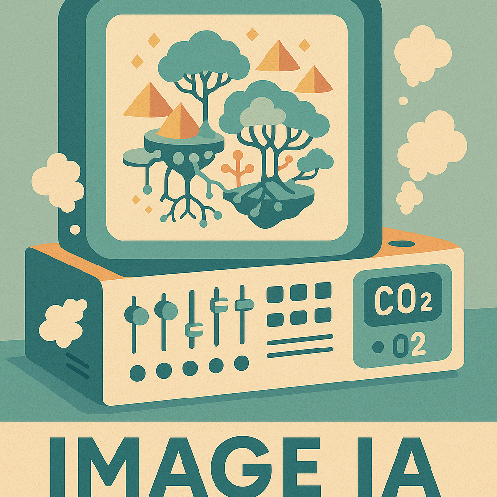
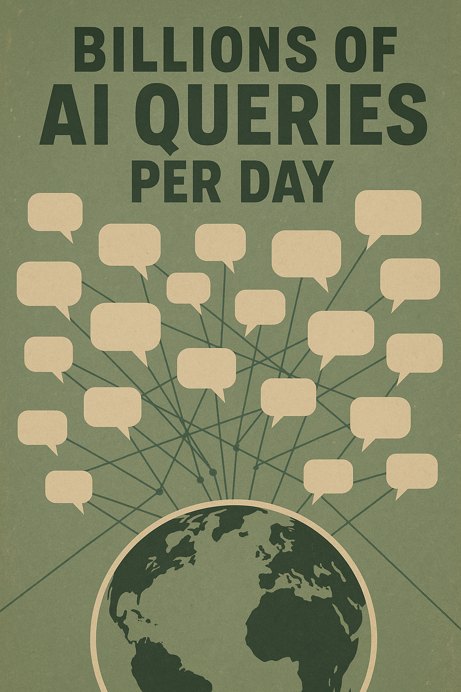
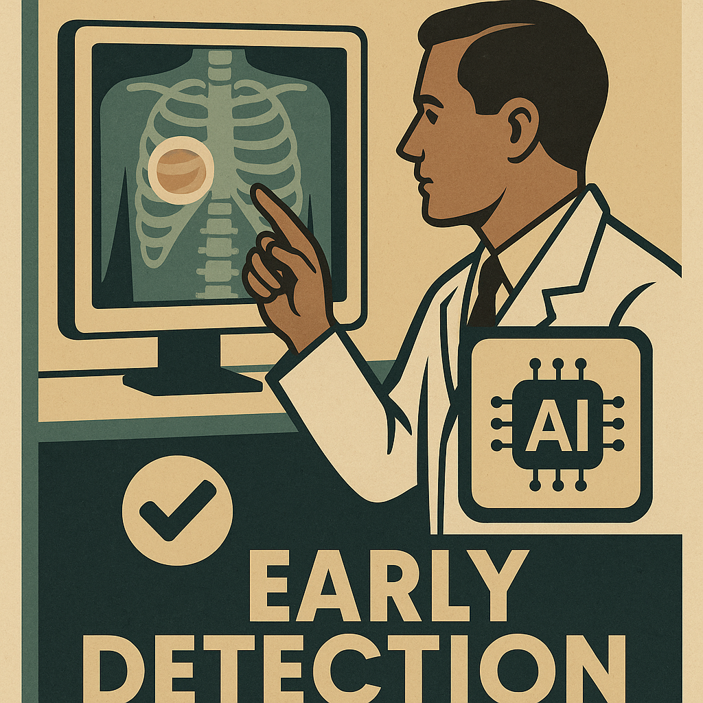

Teste tes connaissances sur l’impact environnemental des IA.
1. Combien de CO₂ est émis lors de l’entraînement d’un modèle comme GPT-4.5 ?

2. Quelle est la consommation carbone mondiale liée aux LLM par jour ?

3. Combien de CO₂ génère une requête type ChatGPT pour écrire un texte ?

4. Créer une image via IA (DALL·E, Midjourney), ça émet combien de CO₂ ?

5. Produire une vidéo courte avec IA génère combien de CO₂ ?

6. Quel volume de CO₂ émis chaque jour via tous les prompts IA ?

7. Impact carbone moyen usage recommandations (par jour) ?

8. Activation fonctions IA en visioconférence augmente émissions de combien ?

9. Reconnaissance faciale émet combien de CO₂ par détection ?

10. Consommation quotidienne CO₂ d’un robot humanoïde actif ?

11. Combien d’élèves utilisent l’IA pour apprendre dans leur langue ?

12. Combien de cancers détectés précocement grâce à l’IA ?
